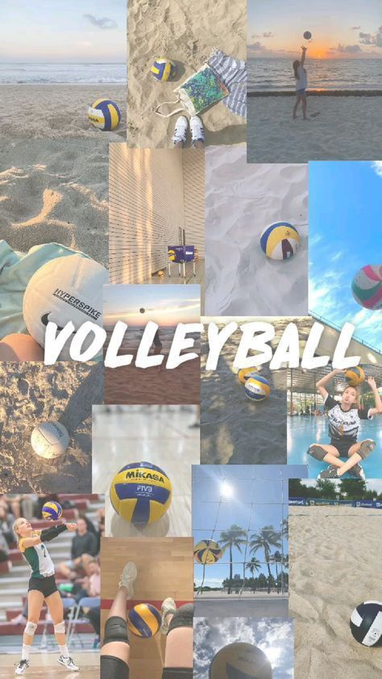
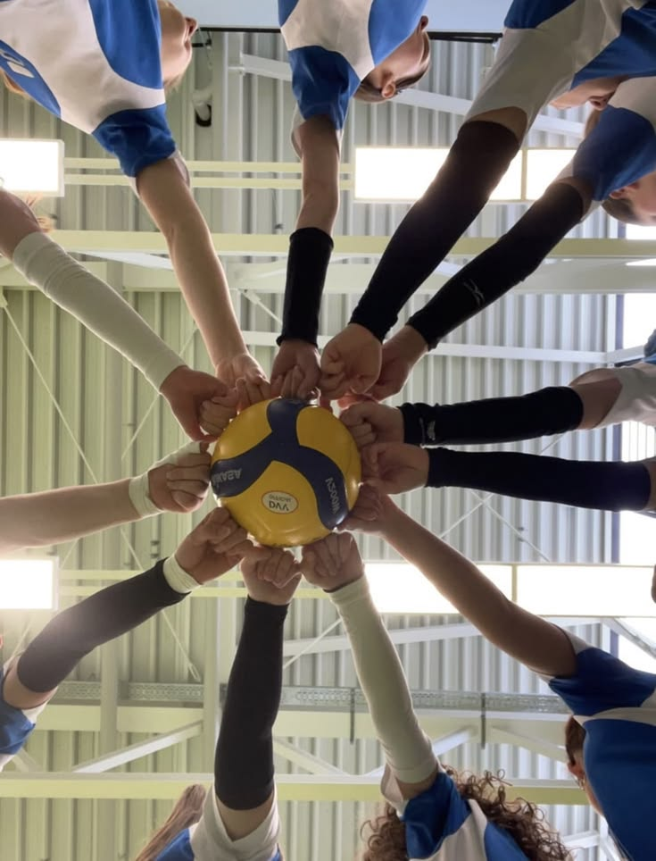
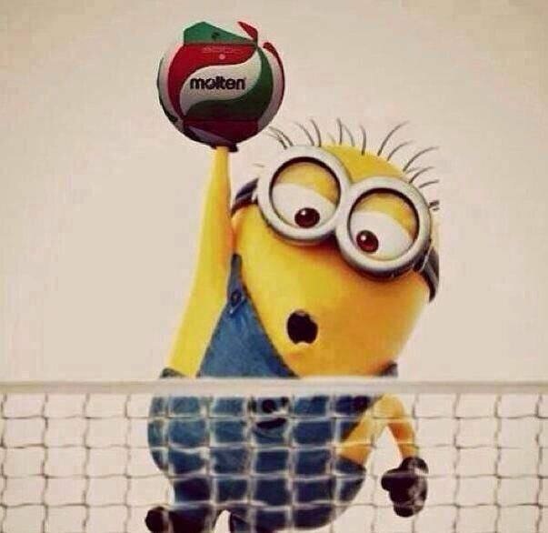
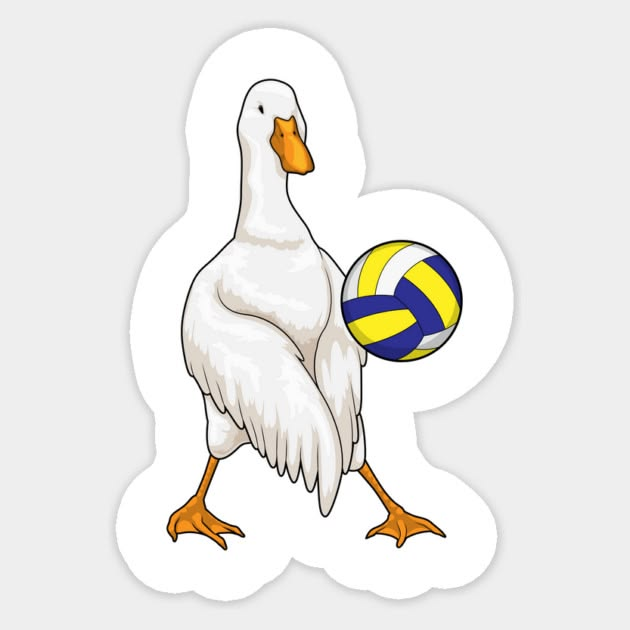

Το βόλεϊ δημιουργήθηκε το 1895 από τον William G. Morgan στο YMCA των ΗΠΑ ως ένα ήπιο, μη επαφικό παιχνίδι κλειστού χώρου που αρχικά ονομαζόταν Mintonette, αλλά γρήγορα μετονομάστηκε σε volleyball όταν παρατηρήθηκε ότι οι παίκτες «βολάρουν» την μπάλα. Με τη διάδοση του μέσω της YMCA, το άθλημα απέκτησε διεθνή απήχηση, οδηγώντας στην ίδρυση της FIVB το 1947 και στην ένταξή του στους Ολυμπιακούς Αγώνες το 1964, ενώ το beach volley έγινε Ολυμπιακό το 1996. Στην Ελλάδα εμφανίστηκε το 1922, αναπτύχθηκε σταδιακά με τη δημιουργία πρωταθλημάτων και ομοσπονδιών, και εξελίχθηκε παράλληλα με τις διεθνείς αλλαγές, όπως η εισαγωγή του λίμπερο και του rally scoring, που έκαναν το παιχνίδι πιο γρήγορο και θεαματικό..

Το βόλεϊ είναι ένα άθλημα που στηρίζεται βαθιά στην ομαδικότητα, γιατί κάθε φάση απαιτεί συνεργασία, συντονισμό και εμπιστοσύνη ανάμεσα στους παίκτες: από την υποδοχή και την πάσα μέχρι το τελικό χτύπημα, τίποτα δεν μπορεί να γίνει σωστά χωρίς συνδυασμένη προσπάθεια. Η επιτυχία μιας ομάδας δεν εξαρτάται από έναν μόνο αθλητή αλλά από το πώς όλοι λειτουργούν σαν ενιαίο σύνολο, καλύπτουν ο ένας τον άλλον, επικοινωνούν συνεχώς και μοιράζονται την ευθύνη σε κάθε πόντο. Έτσι, το βόλεϊ δεν χτίζει μόνο τεχνικές δεξιότητες αλλά και ισχυρούς δεσμούς, καλλιεργώντας σεβασμό, αλληλοστήριξη και την αίσθηση ότι κάθε μικρή κίνηση συμβάλλει σε έναν κοινό στόχο..


Οι κινήσεις του βόλεϊ έχουν μια μαγεία που σε τραβάει μέσα στο παιχνίδι: η υποδοχή είναι η πρώτη επαφή, μια στιγμή όπου νιώθεις την ενέργεια της μπάλας και την κατευθύνεις με ακρίβεια· η πάσα είναι η καρδιά της συνεργασίας, μια κίνηση που δείχνει εμπιστοσύνη γιατί δίνεις στον συμπαίκτη σου την τέλεια ευκαιρία να λάμψει· και το καρφί είναι η έκρηξη, η στιγμή που αφήνεις όλη σου τη δύναμη και τη θέληση να περάσουν μέσα από το σώμα σου και να στείλουν την μπάλα στο έδαφος. Κάθε άλμα, κάθε βουτιά, κάθε άμυνα σε κάνει να νιώθεις ζωντανός, δυνατός και μέρος μιας ομάδας που παλεύει μαζί. Αν θες ένα άθλημα που σε κάνει να εξελίσσεσαι, να συνεργάζεσαι και να νιώθεις ότι κάθε κίνηση έχει νόημα, τότε το βόλεϊ είναι αυτό που ψάχνεις..